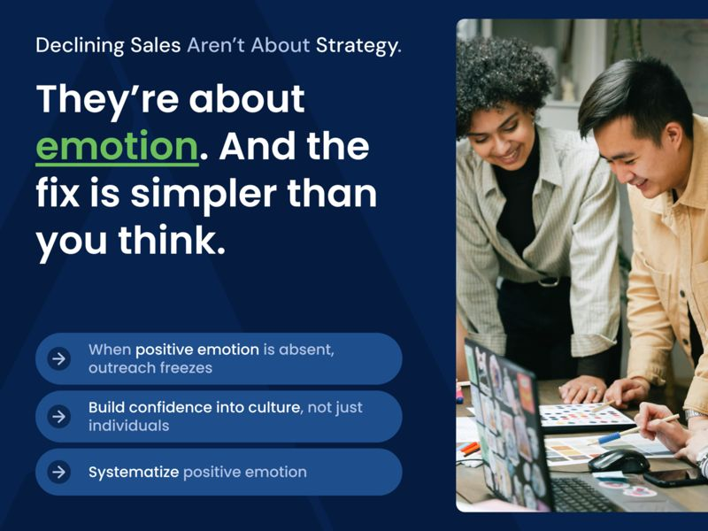
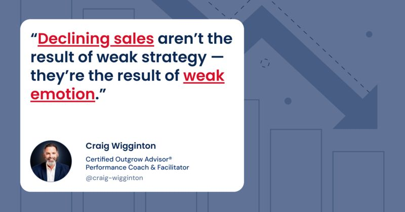

The Culture Multiplier: How Managers Keep Belief Alive When You’re Not in the Room
A proactive culture doesn’t happen by accident. Discover how managers turn belief into a weekly rhythm that keeps teams aligned and consistently growing.
ReadCulture & Mindset

(Part 2 of the PERMA Series)
In the previous article, we explored why most business development efforts are broken and sales are declining; not because people are lazy, but because they’re disconnected. Disconnected from customers. Disconnected from each other. Disconnected from any shared sense of purpose, rhythm, or result. At the heart of that disconnection and declining sales is something most leaders never think to measure:
Emotion.
More specifically: the absence of positive emotion in the selling process.
Think about it: how do your customer-facing people feel on a typical Tuesday?
Because here’s what we know from the science of Positive Psychology: our emotions directly shape our behavior. In fact, emotion precedes action.
And when your team doesn’t feel good about reaching out, they don’t do it. Period.
That means calls don’t get made. Leads don’t get followed up. Opportunities get “saved for later” (translation: forgotten). And an entire revenue function starts operating from fear – fear of rejection, fear of being annoying, fear of not adding value.
Let’s call this what it is: emotional scarcity.
Left unchecked, low morale quietly shows up as declining sales — costing your business seven or even eight figures per year.
Your best people play it safe. Your average performers go silent. And only the natural extroverts (if you’re lucky enough to have them) carry the load. Even then, they’re often under-supported, emotionally isolated, and burning out.
Meanwhile, your customers? They’re not hearing from you nearly enough. And when they do, it’s reactive, like when something breaks, when a bill is due, or when it’s too late to win the work.
This is the opposite of what business development should feel like.
And more importantly, it’s the opposite of what it could feel like.
Now imagine this: what if your salespeople, your CSRs, even your ops folks felt good every time they reached out to a customer?
What if every proactive call or text or check-in wasn’t a burden, but a confidence booster?
What if reaching out was associated not with rejection… but with reward?
That’s the power of Positive Emotion. And it’s not just a nice-to-have. It’s a growth multiplier. When intentionally cultivated, it drives performance across the board.
So the question becomes: how do you engineer more of that?
In the next section, we’ll break down exactly how Positive Emotion becomes the foundation of a flourishing sales culture, and what it looks like when it shows up in every corner of your business.
Most people think sales is about persuasion.
I think it’s about emotion.
And when you create a culture where positive emotion is not only present but normalized, the impact on sales performance is transformative.
We’re not talking about forced enthusiasm or cheesy affirmations. We’re talking about a deep, contagious sense of confidence, gratitude, and optimism that fuels helpful outreach; the kind that drives revenue without pressure.
Here’s what it looks like in a company that has it:
Let me illustrate:
Suppose a commercial construction company was struggling with stagnant growth. The team was competent, but cautious. Their outreach was limited to quotes and complaints. One of the first things we do with Outgrow is source genuine positive feedback from their customers – the kind of comments that are usually buried in inboxes or forgotten after a call.
We pull these into a testimonial book and we listen to the transcripts together.
The effect is immediate.
People sit up straighter. I’ve heard comments like, “I didn’t realize our customers actually thought about us like that.” Or, “It feels so good to know we make that kind of difference in their world.”
And the sales results? In the next 90 days, Outgrow companies often surface more net-new opportunities than the previous two quarters combined. Not because they learned new closing tactics, but because they finally believed they had something worth sharing.
That’s Positive Emotion in action.
When people feel emotionally safe, they become emotionally generous; with customers, with each other, and with themselves.
And this isn’t just a feel-good theory. Positive Psychology research shows that:
So what if your company didn’t just experience this as a moment, but as a sysftem?
What if confidence wasn’t left to chance…but built into the way you do business?
That’s where we’re headed in the next section, where I’ll show you exactly how the Outgrow system activates Positive Emotion daily, across your entire customer-facing team.
This isn’t theoretical. It’s operational. And it’s how you turn confidence into cash flow – one positive touch at a time.
If positive emotion is the fuel of sales, then Outgrow is the engine that burns it efficiently; every day, across every customer-facing role.
We’re not hoping for morale. We’re engineering it.
Here’s how.
Most teams never hear how valuable they are, because we don’t create space to listen. So Outgrow begins by mining for gold: real, specific, positive feedback from your existing customers.
Think of this as the “Confidence Bank.”
It’s your team’s emotional reserve and a catalogue of your customers’ experience, like:
Once collected, we drip this feedback into weekly team huddles and monthly reviews. And suddenly, the tone of the room changes. You can see the confidence kick in.
Confidence is built through evidence. The most powerful source of sales courage is knowing the customer already values you.
Outgrow’s daily outreach – what we call “swings” – is built on emotional safety. We don’t ask your team to “pitch” or “close” or “sell harder.” Instead, we ask them to help more customers, more often.
That’s the emotional unlock.
Because asking “What else can I help you with?” feels natural. And to say “Just thinking about you” and “What’s coming up that we can help you with?” feels human.
This is where positive emotion meets action.
Each team member makes 3–5 simple, low-pressure actions a day:
These aren’t “sales calls.” They’re emotional trust deposits.
And when your people feel good reaching out, they start doing it more. Which leads to more conversations, more opportunities, and more wins.
Positive emotion dies in silence. So at the core of the Outgrow rhythm is recognition.
In every Monday Outgrow Huddle, we share wins… but not just closed deals. We celebrate:
By praising the effort, not just the result, we reinforce the belief: “You matter. Your actions matter. Keep going.”
And because we track swings, you can see effort rising. Culture lifts. Performance follows.
This process only works if it starts from the top. That’s why we help CEOs and sales leaders speak the language of positive reinforcement. Often it’s just a simple, sincere:
You’d be shocked how much momentum that creates, especially for team members who aren’t used to being seen.
In just minutes a day, this system turns optimism into output.
And when you normalize that across your organization – when your team believes they’re welcomed by customers instead of resented – you’ve unlocked the emotional flywheel of sustainable sales growth.

Here’s the truth: declining sales aren’t the result of your team’s lack of strategy or skills.
They’re underperforming because they lack positive emotion; the invisible yet essential force that fuels action, builds trust, and drives consistent outreach.
If your customer-facing people don’t feel good about reaching out…they won’t. And when they don’t reach out, you don’t grow.
It’s that simple.
But it’s also incredibly hopeful, because this isn’t a talent problem. It’s a design problem. And that means it can be fixed.
You don’t need to overhaul your org chart or hire expensive closers. You already have the right people. They just need the right system; one that supports them emotionally, activates them daily, and gives them permission to show up with courage.
That’s what Outgrow does. It builds confidence into the culture. Not as an accident, but as a weekly habit.
Let’s rewind for a second. Picture your team six months from now:
That’s not a fantasy. That’s what happens when positive emotion becomes part of your sales system, not just your sales mood.
Confidence isn’t something you wait for. It’s something you build with action. And once you have it, everything gets easier.
Let’s explore what it would look like to install Outgrow inside your business; to activate your people, align your teams, and unlock the growth that’s already sitting inside your customer base.
Message me directly to schedule a short strategy conversation. I’ll walk you through how this works, how fast it lands, and what kind of results we can drive, quickly and confidently.
Because if your team felt this good every day?
You wouldn’t be hoping for growth.
Keep reading
A proactive culture doesn’t happen by accident. Discover how managers turn belief into a weekly rhythm that keeps teams aligned and consistently growing.
ReadDiscover how fostering accomplishment at work drives motivation, momentum, and measurable growth across your entire sales culture.
ReadMeaning isn’t a luxury — it’s a performance driver. See how creating a high-performance sales culture turns morale and engagement into profit.
Read